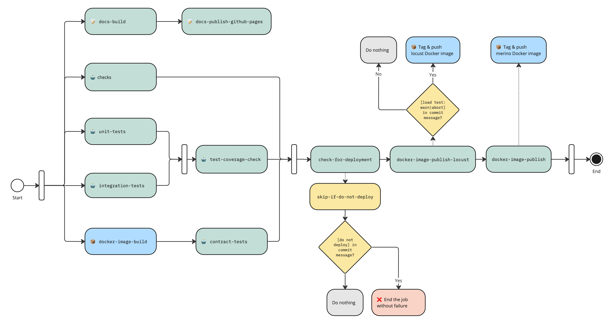
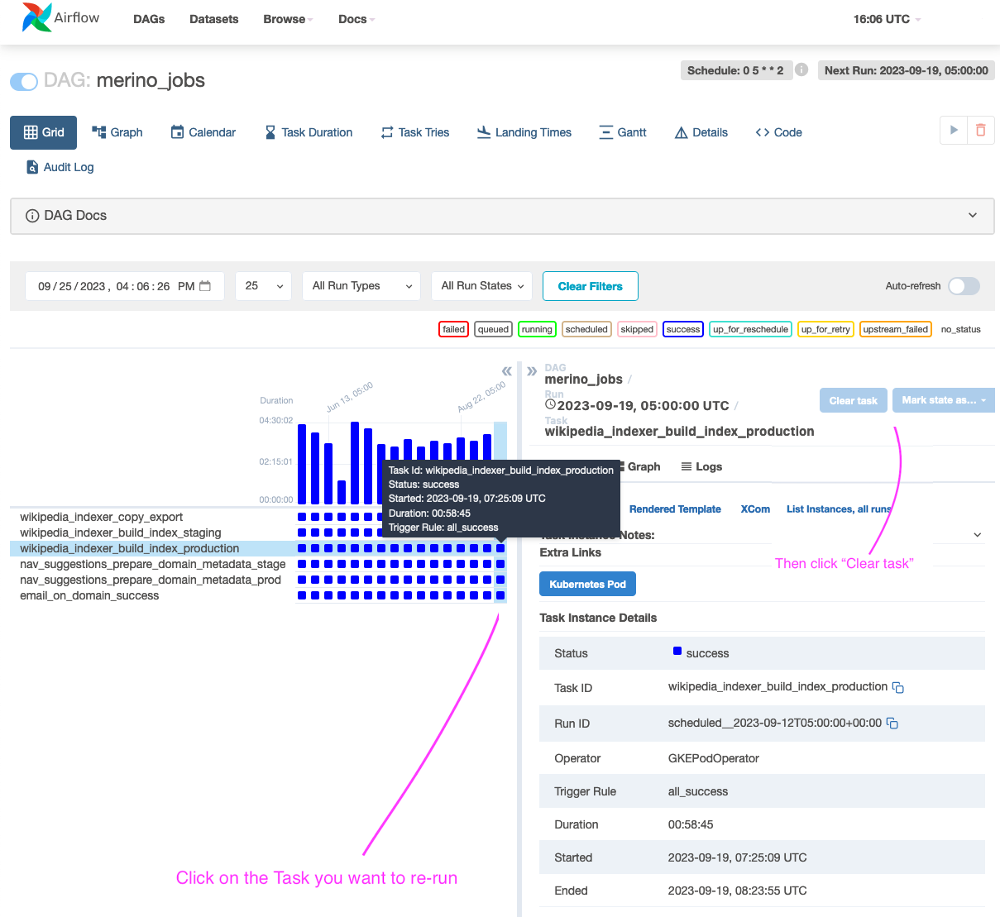
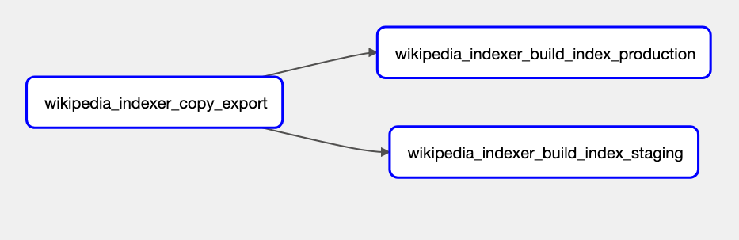
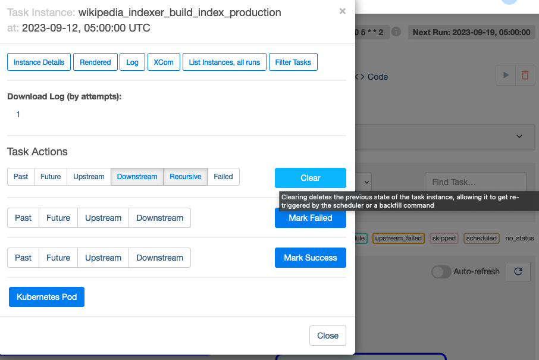

Merino
Merino is a service that provides address bar suggestions and curated recommendations to Firefox. Some of this content comes from third party providers. In this case, Merino serves as a privacy preserving buffer. User input in the address bar is handled by Merino and any clicked impression will be delegated to a Mozilla-controlled service which will then send an interaction ping if defined in the request and not to a provider directly. See API documentation for more details.
Table of Contents
api.md - API Documentation describes endpoints, query parameters, request and response headers, response objects and details on the suggestion objects.
firefox.md - Firefox and Merino Environments describes how to enable Merino in Firefox and lists the endpoints for the service in Production, State and Dev.
data.md - Data, Metrics, Logging describes all metrics and logs.
dev/index.md - Basic Developer Docs describes basics of working on Merino.
dev/dependencies.md - Development Dependencies describes the development dependencies required for Merino.
dev/logging-and-metrics.md - Logging and Metrics describes metrics, logging, and telemetry.
dev/release-process.md - Release Process describes the release process of Merino in detail.
dev/testing.md - Testing describes unit, integration and load tests for Merino.
dev/profiling.md - Profiling describes how to profile Merino to address performance issues.
operations/configs.md - Configuring Merino describes configuration management of the project, Dynaconf setup, and the configuration of the HTTP server, logging, metrics, Remote Settings, and Sentry.
operations/elasticsearch.md - Elasticsearch Operations describes some functionality and operations that we do on the Elasticsearch cluster.
operations/jobs.md - Merino Jobs describes the jobs that are configured in Merino. Indicate where the jobs exist and link to the details for how the jobs are run.
About the Name
This project drives an important part of Firefox's "felt experience". That is, the feeling of using Firefox, hopefully in a delightful way. The word "felt" in this phrase refers to feeling, but it can be punned to refer to the textile. Felt is often made of wool, and Merino wool (from Merino sheep) produces exceptionally smooth felt.
Architecture
flowchart TD
User[\fa:fa-user User/]
subgraph Firefox [fa:fa-firefox Firefox]
online(Online Search and Suggest)
offline(Offline Search and Suggest<br/>fetches adMarketplace, static Wikipedia, <br/>and other suggestions.<br/> Offline mode is fallback if Merino times out.)
end
User --> |Accessing the Firefox URL bar| Firefox
subgraph Merino [fa:fa-leaf Merino]
srh(fa:fa-gears Suggest Request Handler)
subgraph middleware [fa:fa-paperclip Middleware]
Geolocation
Logging
UserAgent
Metrics
end
maxmind[(MaxmindDB)]
Geolocation --> maxmind
srh -..- middleware
subgraph providers [fa:fa-truck Providers]
adm(adm)
amo(amo)
geolocation(geolocation)
toppicks(top-picks)
weather(weather)
wikipedia(wikipedia)
end
srh --> adm
srh --> amo
srh --> geolocation
srh --> toppicks
srh --> weather
srh --> wikipedia
subgraph backends [fa:fa-server Backends]
rsb(remote settings)
accuweather(accuweather)
elastic(elastic)
toppicks_back(top picks)
dynamic_amo(dynamic addons)
end
adm --> rsb
amo --> dynamic_amo
toppicks --> toppicks_back
weather --> accuweather
wikipedia --> elastic
end
subgraph "Airflow (Merino Jobs)"
wikipedia_sync(Wikipedia Sync)
toppicks_sync(Top Picks Sync)
addons_sync(Addons Remote Settings Upload)
end
addons_api(Addons API)
dynamic_amo --> addons_api
elastico[(Elasticsearch)]
elastic --> elastico
wikipedia_sync ..- |Syncs Wikipedia entries weekly| elastico
accuweather_api(Accuweather API)
accuweather ..-> accuweather_api
redis[(Redis Cache)]
accuweather ..-> |tries to query cache first| redis
kinto[(Remote Settings)]
rsb --- kinto
addons_sync ..- |Add Addons Suggestions to Remote Settings| kinto
toppicks_data[(GCS Top Picks Data,<br/>a list of Mozilla curated popular sites and metadata to be <br/>displayed on browser)]
toppicks_sync ..-> toppicks_data
online --> |/api/v1/suggest| srh
offline ..- kinto
Merino API documentation
This page describes the API endpoints available on Merino.
The autogenerated API documentation exists here.
Configuring Firefox and Merino Environments
Merino has been enabled by default in Firefox. Though, you will need to enable
the data sharing for Firefox Suggest to fully enable the feature. To enable it,
type about:config in the URL bar set the Firefox preference
browser.urlbar.quicksuggest.dataCollection.enabled to true. By default,
Merino will connect to the production environments. This is controlled with the
browser.urlbar.merino.endpointURL preference. See below for other options.
You can also query any of the endpoint URLs below with something like:
curl 'https://stage.merino.nonprod.cloudops.mozgcp.net/api/v1/suggest?q=your+query'
Environments
Production
Endpoint URL: https://merino.services.mozilla.com/api/v1/suggest
The primary environment for end users. Firefox is configured to use this by default.
Stage
Endpoint URL: https://stage.merino.nonprod.cloudops.mozgcp.net/api/v1/suggest
This environment is used for manual and load testing of the server. It is not guaranteed to be stable or available. It is used as a part of the deploy process to verify new releases before they got to production.
Data collection
This page should list all metrics and logs that Merino is expected to emit in production, including what should be done about them, if anything.
Logs
This list does not include any DEBUG level events, since those are not logged
by default in production. The level and type of the log is listed.
Any log containing sensitive data must include a boolean field sensitive
that is set to true to exempt it from flowing to the generally accessible
log inspection interfaces.
Merino APIs
-
INFO web.suggest.request- A suggestion request is being processed. This event will include fields for all relevant details of the request. Fields:sensitive- Always set to true to ensure proper routing.query- If query logging is enabled, the text the user typed. Otherwise an empty string.country- The country the request came from.region- The first country subdivision the request came from.city- The city the request came from.dma- A US-only location description that is larger than city and smaller than states, but does not align to political borders.agent- The original user agent.os_family- Parsed from the user agent. One of "windows", "macos", "linux", "ios", "android", "chrome os", "blackberry", or "other".form_factor- Parsed from the user agent. One of "desktop", "phone", "tablet", or "other"browser- The browser and possibly version detected. Either "Firefox(XX)" where XX is the version, or "Other".rid- The request ID.- WIP
accepts_english- True if the user's Accept-Language header includes an English locale, false otherwise. requested_providers- A comma separated list of providers requested via the query string, or an empty string if none were requested (in which case the default values would be used).client_variants- Any client variants sent to Merino in the query string.session_id- A UUID generated by the client for each search session.sequence_no- A client-side event counter (0-based) that records the query sequence within each search session.
-
INFO request.summary- The application request summary that follows the MozLog convention. This log is recorded for all incoming HTTP requests except for the suggest API endpoint.
ERROR dockerflow.error_endpoint- The__error__endpoint of the server was called. This is used to test our error reporting system. It is not a cause for concern, unless we receive a large amount of these records, in which case some outside service is likely malicious or misconfigured.
Merino Middleware Logs
Geolocation
WARNING merino.middleware.geolocation- There was an error with a geolocation lookup.
Merino Cron Tasks
WARNING merino.cron- There was an error while executing a cron task.
Merino Feature Flags
ERROR merino.featureflags- There was an error while attempting to assign a feature flag for a suggest API request.
Curated Recommendations
ERROR merino.curated_recommendations.corpus_backends.corpus_api_backend- Failed to get timezone for scheduled surface.WARNING merino.curated_recommendations.corpus_backends.corpus_api_backend- Retrying CorpusApiBackend after an http client exception was raised.ERROR GcsEngagement failed to update cache: {e}- unexpected exception when updating engagement.ERROR Curated recommendations engagement size {blob.size} > {self.max_size}- Max engagement blob size is exceeded. The backend will gracefully fall back to cached data or 0's.INFO Curated recommendations engagement unchanged since {self.last_updated}.- The engagement blob was not updated since the last check.last_updatedis expected to be between 0 and 30 minutes.
Metrics
A note on timers: Statsd timers are measured in milliseconds, and are reported as integers (at least in Cadence). Milliseconds are often not precise enough for the tasks we want to measure in Merino. Instead, we use generic histograms to record microsecond times. Metrics recorded in this way should have
-usappended to their name, to mark the units used (since we shouldn't put the proper unit μs in metric names).
-
merino.providers.initialize- A timer to measure the overall initialization duration (in ms) for all providers. -
merino.providers.initialize.<provider>- A timer to measure the initialization duration (in ms) for the given<provider>.Example:
merino.providers.initialize.adm -
merino.<http_method>.<url_path>.status_codes.<status_code>- A counter to measure the status codes of an HTTP method for the<url_path>.Example:
merino.get.api.v1.suggest.status_codes.200 -
merino.<http_method>.<url_path>.timing- A timer to measure the duration (in ms) of an HTTP method for a URL path.Example:
merino.get.api.v1.suggest.timing -
merino.<provider_module>.query- A timer to measure the query duration (in ms) of a certain suggestion provider.Example:
merino.providers.suggest.adm.query -
merino.<provider_module>.query.timeout- A counter to measure the query timeouts of a certain suggestion provider.Example:
merino.providers.suggest.wikipedia.query.timeout -
merino.suggestions-per.request- A histogram metric to get the distribution of suggestions per request. -
merino.suggestions-per.provider.<provider_module>- A histogram metric to get the distribution of suggestions returned per provider (per request).Example:
merino.suggestions-per.provider.wikipedia
AccuWeather
The weather provider records additional metrics.
accuweather.upstream.request.<request_type>.get- A counter to measure the number of times an upstream request to Accuweather was made.accuweather.request.location.not_provided- A counter to measure the number of times a query was send without a location being provided, and therefore unable to process a weather request. Sampled at 75%.accuweather.request.location.dist_calculated.success- A counter to measure the number of successful lat long distance calculations used to find location.accuweather.request.location.dist_calculated.fail- A counter to measure the number of failed lat long distance calculations used to find location.merino.providers.accuweather.query.cache.fetch- A timer to measure the duration (in ms) of looking up a weather report in the cache. Sampled at 75%.merino.providers.accuweather.query.cache.fetch.miss.locations- A counter to measure the number of times weather location was not in the cache. Sampled at 75%.merino.providers.accuweather.query.cache.fetch.miss.currentconditions- A counter to measure the number of times a current conditions was not in the cache. Sampled at 75%.merino.providers.accuweather.query.cache.fetch.miss.forecasts- A counter to measure the number of times a forecast for a location was not in the cache. Sampled at 75%.merino.providers.accuweather.query.cache.fetch.hit.{locations | currentconditions | forecasts}- A counter to measure the number of times a requested value like a location or forecast is in the cache. We don't count TTL hits explicitly, just misses. Sampled at 75%.merino.providers.accuweather.query.backend.get- A timer to measure the duration (in ms) of a request for a weather report from the backend. This metric isn't recorded for cache hits. Sampled at 75%.merino.providers.accuweather.query.cache.store- A timer to measure the duration (in ms) of saving a weather report from the backend to the cache. This metric isn't recorded for cache hits. Sampled at 75%.merino.providers.accuweather.query.cache.error- A counter to measure the number of times the cache store returned an error when fetching or storing a weather report. This should be 0 in normal operation. In case of an error, the logs will include aWARNINGwith the full error message.merino.providers.accuweather.skip_cities_mapping.total.size- A counter to measure the total number of occurrences cities were skipped due to no locationmerino.providers.accuweather.skip_cities_mapping.unique.size- A counter to measure the number of unique cities that are skipped due to no location
Curated Recommendations
The following additional metrics are recorded when curated recommendations are requested.
corpus_api.request.timing- A timer to measure the duration (in ms) of looking up a list of scheduled corpus items.corpus_api.request.status_codes.{res.status_code}- A counter to measure the status codes of an HTTP request to the curated-corpus-api.corpus_api.request.graphql_error- A counter to measure the number of GraphQL errors from the curated-corpus-api.recommendation.engagement.update.timing- A timer to measure the duration (in ms) of updating the engagement data from GCS.recommendation.engagement.size- A gauge to track the size of the engagement blob on GCS.recommendation.engagement.count- A gauge to measure the total number of engagement records.recommendation.engagement.{country}.count- A gauge to measure the number of scheduled corpus items with engagement data per country.recommendation.engagement.{country}.clicks- A gauge to measure the number of clicks per country in our GCS engagement blob.recommendation.engagement.{country}.impressions- A gauge to measure the number of impressions per country in our GCS engagement blob.recommendation.engagement.last_updated- A gauge for the staleness (in seconds) of the engagement data, measured between when the data was updated in GCS and the current time.recommendation.prior.update.timing- A timer to measure the duration (in ms) of updating the prior data from GCS.recommendation.prior.size- A gauge to track the size of the Thompson sampling priors blob on GCS.recommendation.prior.last_updated- A gauge for the staleness (in seconds) of the prior data, measured between when the data was updated in GCS and the current time.
Manifest
When requesting a manifest file, we record the following metrics.
manifest.request.get- A counter for how many requests against the/manifestendpoint where made.manifest.request.timing- A timer for how long it took the endpoint to fulfill the request.manifest.gcs.fetch_time- A timer for how long it took to download the latest manifest file from the Google Cloud bucket.manifest.request.no_manifest- A counter to measure how many times we didn't find the latest manifest file.manifest.request.error- A counter to measure how many times we could not provide a valid JSON manifest file.
Merino Developer Guidelines and Social Contract
This is an additional contractual document on top of CONTRIBUTING.
Foster a Shared Ownership
Not only do Merino developers build the service together, they also share the ownership of the service. That ownership is embodied in the following responsibilities:
- Be responsible for the entire lifecycle of each change landed in the code base: from writing the PR and getting it merged; ensuring it goes through CI/CD and eventually deployed to production; setting up monitoring on metrics and ensuring its healthy status and the overall health of Merino.
- Be familiar with Merino’s operation. Conduct operational reviews on a regular basis. Identify and track operational issues. Coordinate with the team(s) to close action items and resolve the identified issues.
- Documentation. Make sure the code meets the documentation requirements (no linting errors). If a change adds/updates the API, logs or metrics, ensure the associated documentation is up to date.
We commit to sharing knowledge about Merino across the team, with the long-term goal that each team member is capable of resolving incidents of Merino. Merino developers should familiarize themselves with the Mozilla Incident Response Process and the Merino Runbooks. Each individual should be able to initiate an incident response, serve as the incident handling manager, and drive it to its resolution along with other incident responders. Any issues associated with an incident should be tracked in Jira in a way the team agrees upon. For example, assigned with an ‘incident-action-items’ label.
- Be aware of the infrastructure costs associated with new functionality. The team should have a good understanding of the cost to run the service including logging, computing, networking, and storage costs.
- Be mindful of work hours and the time zones of your fellow developers when scheduling meetings, deploying code, pairing on code, or collaborating in other ways. Set your work hours in Google Calendar and configure Slack to receive notifications only during those times. We encourage code deployments when there are fellow developers online to support. If you must deploy off-hours, ensure you have a peer available to approve any potential rollbacks.
We are not going to grow individual Merino developers in deployment, operation, documentation, and incident responding for Merino. Rather, we’d like to foster a shared ownership with shared knowledge in every aspect of the day-to-day job for Merino.
Use ADRs to Record Architectural Decisions
ADRs (Architectural Decision Record) are widely adopted by teams at Mozilla to capture important architecture decisions, including their context and consequences. Developers are encouraged to exercise the ADR process to facilitate the decision making on important subjects of the project. ADRs should be made easy to access and reference and therefore are normally checked into the source control and rendered as part of the project documentation.
Use SLO and Error Budget to Manage Service Risks
We strive to build highly available and reliable services while also emphasizing rapid iteration and continuous deployment as key aspects of product development. We opt to use SLOs (Service Level Objective) and error budget for risk management. SLOs can be co-determined by the product owner(s) and the service builders & operators. The error budget should be monitored and enforced by the monitoring infrastructure. Once the budget is reached, the service owners should be more reluctant or even reject to accept risky code artifacts until the budget gets reset.
Request RRA for New Content Integrations
RRA (Rapid Risk Assessment) is the recommended process for service builders to perform a standardized lightweight risk assessment for the service or the feature of interest. Since Merino is a user-facing consumer service, we shall take extra caution for user security and the related risks. We have agreed with the Security Assurance team that we’d request an RRA (by following the RRA instructions) for every new content integration (e.g. AccuWeather) or content storage (e.g. Elasticsearch) for Merino.
Testing for Productivity & Reliability
We value testing as a mechanism of establishing feedback loops for service development, design, and release. As developers add new changes to the project, thorough and effective testing reduces uncertainty and generates short feedback loops, accelerating development, release, and regression resolution. Testing also helps reduce the potential decrease in reliability from each change. To materialize those merits for Merino, we have designed the Merino Test Strategy and fulfilled it with adequate tests. We anticipate the cross-functional team to adhere to the strategy and evolve it to better support the project over time.
Aim for Simplicity
We prioritize simple and conventional solutions in all aspects of development, from system design, to API specs, to code. We prefer mature, battle-tested technologies over complex, cutting-edge alternatives. At the same time, we know that Merino can always get better, and we welcome ideas from everyone. If you’ve got a new approach in mind, share it with the team or propose an Architectural Decision Record (ADR).
Blame-free Culture
While we strive to make Merino a highly reliable service, things would still go wrong regardless of how much care we take. Code errors, misconfigurations, operational glitches, to name a few. We opt for a blame-free culture to ease the mental stress when individuals are encouraged to take on more activities & responsibilities, especially before they gain familiarity around the tasks. We believe that learning from mistakes and incorporating the learned experience into processes to avoid repeating the same mistakes is more constructive and useful than putting someone on center stage. With a blame-free culture and proper risk management processes in place, the average cost of failures should be more tolerable within the error budget boundary. Who would be afraid of making mistakes?
Have Fun
Last but not least. Let’s make Merino a fun project to work with!
Developer documentation for working on Merino
tl;dr
Here are some useful commands when working on Merino.
Run the main app
This project uses Poetry for dependency management. See dependencies for how to install Poetry on your machine.
Install all the dependencies:
$ poetry install
Run Merino:
$ poetry run uvicorn merino.main:app --reload
# Or you can use a shortcut
$ make run
General commands
# List all available make commands with descriptions
$ make help
# Just like `poetry install`
$ make install
# Run linter
$ make ruff-lint
# Run format checker
$ make ruff-fmt
# Run formatter
$ make ruff-format
# Run black
$ make black
# Run bandit
$ make bandit
# Run mypy
$ make mypy
# Run all linting checks
$ make -k lint
# Run all formatters
$ make format
# Run merino-py with the auto code reloading
$ make dev
# Run merino-py without the auto code reloading
$ make run
# Run unit and integration tests and evaluate combined coverage
$ make test
# Evaluate combined unit and integration test coverage
$ make test-coverage-check
# Run unit tests
$ make unit-tests
# List fixtures in use per unit test
$ make unit-test-fixtures
# Run integration tests
$ make integration-tests
# List fixtures in use per integration test
$ make integration-test-fixtures
# Build the docker image for Merino named "app:build"
$ make docker-build
# Run local execution of (Locust) load tests
$ make load-tests
# Stop and remove containers and networks for load tests
$ make load-tests-clean
# Generate documents
$ make doc
# Preview the generated documents
$ make doc-preview
# Profile Merino with Scalene
$ make profile
# Run the Wikipedia CLI job
$ make wikipedia-indexer job=$JOB
Documentation
You can generate documentation, both code level and book level, for Merino and
all related crates by running ./dev/make-all-docs.sh. You'll need mdbook
and mdbook-mermaid, which you can install via:
make doc-install-deps
If you haven't installed Rust and Cargo, you can reference the official Rust document.
Local configuration
The default configuration of Merino is development, which has human-oriented
pretty-print logging and debugging enabled. For settings that you wish to change in the
development configuration, you have two options, listed below.
For full details, make sure to check out the documentation for Merino's setting system (operations/configs.md).
Update the defaults
Dynaconf is used for all configuration management in Merino, where
values are specified in the merino/configs/ directory in .toml files. Environment variables
are set for each environment as well and can be set when using the cli to launch the
Merino service.
Environment variables take precedence over the values set in the .toml files, so
any environment variable set will automatically override defaults. By the same token,
any config file that is pointed to will override the merino/configs/default.toml file.
If the change you want to make makes the system better for most development
tasks, consider adding it to merino/configs/development.toml, so that other developers
can take advantage of it. If you do so, you likely want to add validation to those settings
which needs to be added in merino/config.py, where the Dynaconf instance exists along
with its validators. For examples of the various config settings, look at configs/default.toml
and merino/config.py to see an example of the structure.
It is not advisable to put secrets in configs/secrets.toml.
Create a local override
Dynaconf will use the specified values and environment variables in the
merino/configs/default.toml file. You can change the environment you
want to use as mentioned above, but for local changes to adapt to your
machine or tastes, you can put the configuration in merino/configs/development.local.toml.
This file doesn't exist by default, so you will have to create it.
Then simply copy from the other config files and make the adjustments
that you require. These files should however not be checked into source
control and are configured to be ignored, so long as they follow the *.local.toml
format. Please follow this convention and take extra care to not check them in
and only use them locally.
See the Dynaconf Documentation for more details.
Content Moderation and Blocklists
This summarizes the mechanisms that block sensitive or questionable content in Merino. Because Merino supports several providers that have a broad range of potential suggestions, often from different sources, we require the ability to remove certain suggestions from being displayed.
Blocklists in Merino filter content at two distinct phases:
-
Content that is filtered at the data creation and indexing phase. Provider backends serve suggestions to the client based on matching against searched terms. This ensures that data that could be sensitive is not available to search against since it is not indexed. For instance, the Wikipedia provider filters categories of articles that are tagged with a matching category term in the blocklist.
-
Content that is filtered at application runtime. There are instances where we want to quickly and dynamically add to block lists without re-indexing or running a job. In this case, suggestions are compared to a static list in the code that blocks out these suggestions.
Navigational Suggestions / Top Picks
In the Navigational Suggestions provider, a blocklist is used during data creation to block specific domains of websites that we do not want to suggest.
The blocklist, domain_blocklist.json, is referenced during data generation of the top_picks.json file, which is ingested by the provider backend. This ensures specific domains are not indexed for suggestions. The blocklist is loaded and an exact string comparison is made between all second-level domains and the second-level domains defined in the blocklist.
See nav-suggestions blocklist runbook for more information.
Wikipedia
The Wikipedia Provider does both title filtering and category filtering at the data indexing level.
Since the indexing jobs run periodically, we also implemented title filtering in the provider to get the blocking out sooner.
Indexer
The Wikipedia Indexer Job references a remote blocklist which contains sensitive categories. At job runtime, the indexer reads the remote blocklist and creates a set of article categories that are be excluded from indexing.
The article categories in the blocklist are chosen based off of analysis and best guesses of what could be considered objectionable content, based off of Mozilla's values and brand image. Any modifications to the file should be done with careful consideration.
The indexer also blocks titles that are defined in the WIKIPEDIA_TITLE_BLOCKLIST in the application, which is referenced below. Any title that matches this blocklist is excluded from indexing.
Provider
When queried, the Wikipedia provider reads the WIKIPEDIA_TITLE_BLOCKLIST when creating a WikipediaSuggestion and if the query matches a blocked title, the suggestion is not shown to the client.
We have this feature because the indexing job is not run daily. Therefore, we desire having an option to rapidly add to this list should we need to block a specific article.
See wikipedia blocklist runbook for more information.
Development Dependencies
Package Dependencies
This project uses Poetry for dependency management. While you can use the vanilla virtualenv to set up the dev environment, we highly recommend to check out pyenv and pyenv-virtualenv, as they work nicely with Poetry. Follow the instructions to install pyenv, pyenv-virtualenv, and poetry.
Feel free to browse the pyproject.toml file for a listing of dependencies and their versions.
Once Poetry is installed, install all the dependencies:
$ poetry install
Add packages to project via poetry
$ poetry add <package_name>
After that you should be to run Merino as follows:
$ poetry run uvicorn merino.main:app --reload
# Or you can fire up a poetry shell to make it shorter
$ poetry shell
$ uvicorn merino.main:app --reload
Service Dependencies
Merino uses a Redis-based caching system, and so requires a Redis instance to connect to.
To make things simple, Redis (and any future service dependencies) can be
started with Docker Compose, using the docker-compose.yaml file in the dev/
directory. Notably, this does not run any Merino components that have source
code in this repository.
$ cd dev
$ docker-compose up
# Or run services in deamon mode
$ docker-compose up -d
# Stop it
$ docker-compose down
# Shortcuts are also provided
$ make docker-compose-up
$ make docker-compose-up-daemon
$ make docker-compose-down
Redis is listening on port 6397 and can be connected via redis://localhost:6397.
This Dockerized set up is optional. Feel free to run the dependent services by any other means as well.
Dev Helpers
The docker-compose setup also includes some services that can help during development.
- Redis Commander, http://localhost:8081 - Explore the Redis database started above.
Logging and Metrics
To get data out of Merino and into observable systems, we use metrics and logging. Each has a unique use case. Note that in general, because of the scale we work at, adding a metric or log event in production is not free, and if we are careless can end up costing quite a bit. Record what is needed, but don't go over board.
All data collection that happens in production (logging at INFO, WARN, or ERROR
levels; and metrics) should be documented in docs/data.md.
Logging
Merino uses MozLog for structured logging. Logs can be recorded through the
standard Python logging module. Merino can output logs in various formats,
including a JSON format (MozLog) for production. A pretty, human readable format
is also provided for development and other use cases.
Types
MozLog requires that all messages have a type value. By convention, we use
the name of the Python module, where the log record get issued, to populate this
field. For example:
import logging
logger = logging.getLogger(__name__)
# The `type` field of the log record will be the same as `__name__`.
logger.info("A new log message", data=extra_fields)
In general, the log message ("An empty MultiProvider was created") and the log type should both tell the reader what has happened. The difference is that the message is for humans and the type is for machines.
Levels
Tracing provides five log levels that should be familiar. This is what we mean by them in Merino:
-
CRITICAL- There was a serious error indicating that the program itself may be unable to continue running. -
ERROR- There was a problem, and the task was not completable. This usually results in a 500 being sent to the user. All error logs encountered in production are reported to Sentry and should be considered a bug. If it isn't a bug, it shouldn't be logged as an error. -
WARNING- There was a problem, but the task was able to recover. This doesn't usually affect what the user sees. Warnings are suitable for unexpected but "in-spec" issues, like a sync job not returning an empty set or using a deprecated function. These are not reported to Sentry. -
INFO- This is the default level of the production service. Use for logging that something happened that isn't a problem and we care about in production. This is the level that Merino uses for it's one-per-request logs and sync status messages. Be careful adding new per-request logs at this level, as they can be expensive. -
DEBUG- This is the default level for developers running code locally. Use this to give insight into how the system is working, but keep in mind that this will be on by default, so don't be too noisy. Generally this should summarize what's happening, but not give the small details like a log line for every iteration of a loop. Since this is off in production, there are no cost concerns.
Metrics
Merino metrics are reported as Statsd metrics.
Unlike logging, the primary way that metrics reporting can cost a lot is in cardinality. The number of metric IDs we have and the combination of tag values that we supply. Often the number of individual events doesn't matter as much, since multiple events are aggregated together.
Middlwares
Merino leverages middleware for various functionalities such as logging, metrics,
parsing for geolocation & user agent, feature flags etc. Middleware is defined
in the merino/middleware directory.
Caveat
We currently don't implement middleware using the middleware facilities provided by FastAPI/Starlette as they've shown significant performance overhead, preventing Merino from achieving the SLOs required by Firefox Suggest.
Before those performance issues get resolved in the upstream, we will be implementing
middleware for Merino through the ASGI protocol. You can also reference this
tutorial to learn more about ASGI. See Starlette's middleware document
for more details about how to write pure ASGI middlewares. Specifically, we can reuse
Starlette's data structures (Request, Headers, QueryParams etc.) to facilitate
the implementation.
Feature Flags
Usage
Do you plan to release code behind a feature flag? Great! 😃
Your feature flag needs to be defined first. If it's already defined, go ahead. Otherwise check the configuration section below before you continue.
Use the following line in API endpoint code to gain access to the feature flags object:
feature_flags: FeatureFlags = request.scope[ScopeKey.FEATURE_FLAGS]
Then check whether a certain feature flag, such as example, is enabled by calling:
if feature_flags.is_enabled("example"):
print("feature flag 'example' is enabled! 🚀")
When you do that, the decision (whether the feature flag is enabled or not) is
recorded and stored in a dict on the decisions attribute of the feature
flags object.
Implementation
The feature flags system in Merino consists of three components:
| Description | Location |
|---|---|
A FastAPI middleware that reads the query parameter sid sent by the client application and sets a session ID for the current request based on that. | merino/middleware/featureflags.py |
A FeatureFlags class which you can use to check if a certain feature flag is enabled. | merino/featureflags.py |
| A local directory containing static files that define and configure feature flags for Merino. | merino/configs/flags/ |
Configuration
Currently two bucketing schemes are supported: random and session.
Random
Random does what it says on the tin. It generates a random bucketing ID for every flag check.
Session
Session bucketing uses the session ID of the request as the bucketing key so that feature checks within a given search session would be consistent.
Fields
Each flag defines the following fields:
[default.flags.<flag_name>]
scheme = 'session'
enabled = 0.5
| Field | Description |
|---|---|
scheme | This is the bucketing scheme for the flag. Allowed values are 'random' and 'session' |
enabled | This represents the % enabled for the flag and must be a float between 0 and 1 |
Metrics
When submitting application metrics, feature flag decisions that were made while processing the current request up to this point are automatically added as tags to the emitted metrics.
The format of these tags is:
feature_flag.<feature_flag_name>
For more information about this see the ClientMeta meta class and the
add_feature_flags decorator in merino/metrics.py.
Monitoring in Grafana
Because feature flag decisions are automatically added as tags to emitted metrics, you can use them in your queries in Grafana. 📈
For example, if you want to group by decisions for a feature flag with name
hello_world, you can use tag(feature_flag.hello_world) in GROUP BY in
Grafana. You can also use [[tag_feature_flag.hello_world]] in the ALIAS for
panel legends.
The Release Process
This project currently follows a Continuous Deployment process.
Whenever a commit is pushed to this repository's main branch, a CircleCI workflow is triggered
which performs code checks and runs automated tests. The workflow additionally builds a new Docker
image of the service and pushes that Docker image to the Docker Hub registry (this requires all
previous jobs to pass).
Pushing a new Docker image to the Docker Hub registry triggers a webhook that starts the Jenkins
deployment pipeline (the Docker image tag determines the target environment). The deployment
pipeline first deploys to the stage environment and subsequently to the
production environment.

After the deployment is complete, accessing the __version__ endpoint will show
the commit hash of the deployed version, which will eventually match to the one of the latest commit
on the main branch (a node with an older version might still serve the request before it is shut
down).
Release Best Practices
The expectation is that the author of the change will:
- merge pull requests during hours when the majority of contributors are online
- monitor the [Merino Application & Infrastructure][merino_app_info] dashboard for any anomaly
Versioning
The commit hash of the deployed code is considered its version identifier. The commit hash can be
retrieved locally via git rev-parse HEAD.
Load Testing
Load testing can be performed either locally or during the deployment process. During deployment, load tests are run against the staging environment before Merino-py is promoted to production.
Load tests in continuous deployment are controlled by adding a specific label to the commit message
being deployed. The format for the label is [load test: (abort|skip|warn)]. Typically, this label
is added to the merge commit created when a GitHub pull request is integrated.
abort: Stops the deployment if the load test fails.skip: Skips load testing entirely during deployment.warn: Proceeds with the deployment even if the load test fails, but sends a warning notification through Slack.
If no label is included in the commit message, the default behavior is to run the load test and issue a warning if it fails.
For more detailed information about load testing procedures and conventions, please refer to the Load Test README.
Logs from load tests executed in continuous deployment are available in the /data volume of the
Locust master kubernetes pod.
What to do if production breaks?
If your latest release causes problems and needs to be rolled back: don't panic and follow the instructions in the Rollback Runbook.
What to do if tests fail during deployment?
Please refer to What to do with Test Failures in CI?
Profiling
As Merino runs as a single-threaded application using the asyncio-based framework, it would be useful for engineers to get a good understanding about how Merino performs and where it spends time and memory doing what tasks to serve the requests. Local profiling offers us a way to look into those low-level details.
We use Scalene as the profiler to conduct the profiling for Merino. It's very easy to use, offers extremely detailed (at the line level) insights with much lower overhead compared to other profilers.
Usage
To start the profiling, you can run the following to start Merino with Scalene:
$ make profile
# or you can run it directly
$ python -m scalene merino/main.py
Then you can send requests to Merino manually or through using other load testing tools. Once that's done, you can terminate the Merino application. It will automatically collect profiling outputs (CPU & Memory) and open it in your browser.
Understand the outputs
Out of the box, Scalene provides a very intuitive web interface to display the profiling outputs. It's organized at the file (module) level. For each file, it shows the CPU time and average memory usage for both the line profile and the function profile of that module. You can also click on specific columns to sort the lines or functions accordingly.
For more details of how to read the outputs, you can reference Scalene's documents.
Equipped with those insights, you can have a good understanding about the application, identify hotspots, bottlenecks, or other findings that are not easy to uncover by only reading the source code. And then, you can tweak or fix those issues, test or profile it again to verify if the fix is working.
Merino Testing
Test Strategy
Merino is tested using a combination of functional and performance tests.
Test code resides in the tests directory.
Merino's test strategy requires that we do not go below a minimum test coverage percentage for unit and integration tests. Load tests cannot go below a minimum performance threshold.
Test documentation resides in the /docs/testing/ directory.
The functional test strategy is four-tiered, composed of:
See documentation and repositories in each given test area for specific details on running and maintaining tests.
Unit Tests
The unit layer is suitable for testing complex behavior at a small scale, with fine-grained control over the inputs. Due to their narrow scope, unit tests are fundamental to thorough test coverage.
To execute unit tests, use: make unit-tests
Unit tests are written and executed with pytest and are located in the tests/unit directory,
using the same organizational structure as the source code of the merino service.
Type aliases dedicated for test should be stored in the types.py module.
The conftest.py modules contain common utilities in fixtures.
For a breakdown of fixtures in use per test, use: make unit-test-fixtures
Fixtures
Available fixtures include:
FilterCaplogFixture
Useful when verifying log messages, this fixture filters log records captured with
pytest's caplog by a given logger_name.
Usage:
def test_with_filter_caplog(
caplog: LogCaptureFixture, filter_caplog: FilterCaplogFixture
) -> None:
records: list[LogRecord] = filter_caplog(caplog.records, "merino.providers.suggest.adm")
Note: This fixture is shared with integration tests.
SuggestionRequestFixture
For use when querying providers, this fixture creates a SuggestionRequest object with
a given query
Usage:
def test_with_suggestion_request(srequest: SuggestionRequestFixture) -> None:
request: SuggestionRequest = srequest("example")
result: list[BaseSuggestion] = await provider.query(request)
ScopeFixture, ReceiveMockFixture & SendMockFixture
For use when testing middleware, these fixtures initialize or mock the common Scope, Receive and Send object dependencies.
Usage:
def test_middleware(scope: Scope, receive_mock: Receive, send_mock: Send) -> None:
pass
Integration Tests
The integration layer of testing allows for verification of interactions between service components, with lower development, maintenance and execution costs compared with higher level tests.
To execute integration tests, make sure you have Docker installed and a docker daemon running. Then use: make integration-tests
Integration tests are located in the tests/integration directory.
They use pytest and the FastAPI TestClient to send requests to specific merino endpoints and verify responses as well as other outputs, such as logs.
Tests are organized according to the API path under test.
Type aliases dedicated for test should be stored in the types.py module.
Fake providers created for test should be stored in the fake_providers.py module.
The conftest.py modules contain common utilities in fixtures.
We have also added integration tests that use Docker via the testcontainers library. See fixture example below.
For a breakdown of fixtures in use per test, use: make integration-test-fixtures
Fixtures
Available fixtures include:
FilterCaplogFixture
Details available in Unit Tests section
TestClientFixture
This fixture creates an instance of the TestClient to be used in testing API calls.
Usage:
def test_with_test_client(client: TestClient):
response: Response = client.get("/api/v1/endpoint")
TestClientWithEventsFixture
This fixture creates an instance of the TestClient, that will trigger event handlers
(i.e. startup and shutdown) to be used in testing API calls.
Usage:
def test_with_test_client_with_event(client_with_events: TestClient):
response: Response = client_with_events.get("/api/v1/endpoint")
RequestSummaryLogDataFixture
This fixture will extract the extra log data from a captured 'request.summary' LogRecord for verification
Usage:
def test_with_log_data(
caplog: LogCaptureFixture,
filter_caplog: FilterCaplogFixture,
extract_request_summary_log_data: LogDataFixture
):
records: list[LogRecord] = filter_caplog(caplog.records, "request.summary")
assert len(records) == 1
record: LogRecord = records[0]
log_data: dict[str, Any] = extract_request_summary_log_data(record)
assert log_data == expected_log_data
InjectProvidersFixture & ProvidersFixture
These fixture will setup and teardown given providers.
Usage:
If specifying providers for a module:
@pytest.fixture(name="providers")
def fixture_providers() -> Providers:
return {"test-provider": TestProvider()}
If specifying providers for a test:
@pytest.mark.parametrize("providers", [{"test-provider": TestProvider()}])
def test_with_provider() -> None:
pass
SetupProvidersFixture
This fixture sets application provider dependency overrides.
Usage:
def test_with_setup_providers(setup_providers: SetupProvidersFixture):
providers: dict[str, BaseProvider] = {"test-provider": TestProvider()}
setup_providers(providers)
TeardownProvidersFixture
This fixture resets application provider dependency overrides and is often used in teardown fixtures.
Usage:
@pytest.fixture(autouse=True)
def teardown(teardown_providers: TeardownProvidersFixture):
yield
teardown_providers()
TestcontainersFixture
See tests/integration/jobs/navigational_suggestions/test_domain_metadata_uploader.py for a detailed example.
This is a lightweight example on how to set up a docker container for your integration tests.
Usage:
@pytest.fixture(scope="module")
def your_docker_container() -> DockerContainer:
os.environ.setdefault("STORAGE_EMULATOR_HOST", "http://localhost:4443")
container = (
DockerContainer("your-docker-image")
.with_command("-scheme http")
.with_bind_ports(4443, 4443)
).start()
# wait for the container to start and emit logs
delay = wait_for_logs(container, "server started at")
port = container.get_exposed_port(4443)
yield container
container.stop()
Merino Load (Locust) Tests
This documentation describes the load tests for Merino. This test framework uses IP2Location LITE data available from https://lite.ip2location.com
Overview
The tests in the tests/load directory spawn multiple HTTP clients that consume Merino's API,
in order to simulate real-world load on the Merino infrastructure.
These tests use the Locust framework and are triggered at the discretion of the Merino Engineering Team.
Related Documentation
Local Execution
Note that if you make changes to the load test code, you must stop and remove the Docker containers and networks for changes to reflect.
Do this by running make load-tests-clean.
Follow the steps bellow to execute the load tests locally:
Setup Environment
1. Configure Environment Variables
The following environment variables as well as
Locust environment variables can be set in
tests\load\docker-compose.yml.
Make sure any required API key is added but then not checked into source control.
WARNING: if the WIKIPEDIA__ES_API_KEY is missing, the load tests will not execute.
| Environment Variable | Node(s) | Description |
|---|---|---|
| LOAD_TESTS__LOGGING_LEVEL | master & worker | Level for the logger in the load tests as an int (10 for DEBUG, 20 for INFO etc.) |
| MERINO_REMOTE_SETTINGS__SERVER | master & worker | Server URL of the Kinto instance containing suggestions |
| MERINO_REMOTE_SETTINGS__BUCKET | master & worker | Kinto bucket with the suggestions |
| MERINO_REMOTE_SETTINGS__COLLECTION | master & worker | Kinto collection with the suggestions |
| MERINO_PROVIDERS__TOP_PICKS__TOP_PICKS_FILE_PATH | master & worker | The minimum character limit set for long domain suggestion indexing |
| MERINO_PROVIDERS__TOP_PICKS__QUERY_CHAR_LIMIT | master & worker | The minimum character limit set for short domain suggestion indexing |
| MERINO_PROVIDERS__TOP_PICKS__FIREFOX_CHAR_LIMIT | master & worker | File path to the json file of domains |
| MERINO_PROVIDERS__WIKIPEDIA__ES_API_KEY | master & worker | The base64 key used to authenticate on the Elasticsearch cluster specified by es_cloud_id |
| MERINO_PROVIDERS__WIKIPEDIA__ES_URL | master & worker | The Cloud ID of the Elasticsearch cluster |
| MERINO_PROVIDERS__WIKIPEDIA__ES_INDEX | master & worker | The index identifier of Wikipedia in Elasticsearch |
2. Host Locust via Docker
Execute the following from the repository root:
make load-tests
3. (Optional) Host Merino Locally
Use one of the following commands to host Merino locally. Execute the following from the repository root:
- Option 1: Use the local development instance
make dev - Option 2: Use the profiler instance
make profile - Option 3: Use the Docker instance
make docker-build && docker run -p 8000:8000 app:build
Run Test Session
1. Start Load Test
- In a browser navigate to
http://localhost:8089/ - Set up the load test parameters:
- Option 1: Select the
MerinoSmokeLoadTestShapeorMerinoAverageLoadTestShape- These options have pre-defined settings
- Option 2: Select the
Defaultload test shape with the following recommended settings:- Number of users: 25
- Spawn rate: 1
- Host: 'https://stagepy.merino.nonprod.cloudops.mozgcp.net'
- Set host to 'http://host.docker.internal:8000' to test against a local instance of Merino
- Duration (Optional): 10m
- Option 1: Select the
- Select "Start Swarming"
2. Stop Load Test
Select the 'Stop' button in the top right hand corner of the Locust UI, after the desired test duration has elapsed. If the 'Run time' is set in step 1, the load test will stop automatically.
3. Analyse Results
- See Distributed GCP Execution (Manual Trigger) - Analyse Results
- Only client-side measures, provided by Locust, are available when executing against a local instance of Merino.
Clean-up Environment
1. Remove Load Test Docker Containers
Execute the following from the repository root:
make load-tests-clean
Distributed GCP Execution - Manual Trigger
Follow the steps bellow to execute the distributed load tests on GCP with a manual trigger:
Setup Environment
1. Start a GCP Cloud Shell
The load tests can be executed from the contextual-services-test-eng cloud shell.
2. Configure the Bash Script
- The
setup_k8s.shfile, located in thetests\loaddirectory, contains shell commands to create a GKE cluster, setup an existing GKE cluster or delete a GKE cluster- Modify the script to include the MERINO_PROVIDERS__WIKIPEDIA__ES_API_KEY environment variables
- Execute the following from the root directory, to make the file executable:
chmod +x tests/load/setup_k8s.sh
3. Create the GCP Cluster
- Execute the
setup_k8s.shfile and select the create option, in order to initiate the process of creating a cluster, setting up the env variables and building the docker image. Choose smoke or average depending on the type of load test required../tests/load/setup_k8s.sh create [smoke|average]- Smoke - The smoke load test verifies the system's performance under minimal load. The test is run for a short period, possibly in CD, to ensure the system is working correctly.
- Average - The average load test measures the system's performance under standard operational conditions. The test is meant to reflect an ordinary day in production.
- The cluster creation process will take some time. It is considered complete, once
an external IP is assigned to the
locust_masternode. Monitor the assignment via a watch loop:kubectl get svc locust-master --watch - The number of workers is defaulted to 5, but can be modified with the
kubectl scalecommand. Example (10 workers):kubectl scale deployment/locust-worker --replicas=10 - To apply new changes to an existing GCP Cluster, execute the
setup_k8s.shfile and select the setup option.- This option will consider the local commit history, creating new containers and deploying them (see Artifact Registry)
Run Test Session
1. Start Load Test
-
In a browser navigate to
http://$EXTERNAL_IP:8089This url can be generated via command
EXTERNAL_IP=$(kubectl get svc locust-master -o jsonpath="{.status.loadBalancer.ingress[0].ip}") echo http://$EXTERNAL_IP:8089 -
Select the
MerinoSmokeLoadTestShape, this option has pre-defined settings and will last 5 minutes -
Select "Start Swarming"
2. Stop Load Test
Select the 'Stop' button in the top right hand corner of the Locust UI, after the desired test duration has elapsed. If the 'Run time' is set in step 1, the load test will stop automatically.
3. Analyse Results
RPS
- The request-per-second load target for Merino is
1500 - Locust reports client-side RPS via the "merino_stats.csv" file and the UI (under the "Statistics" tab or the "Charts" tab)
- Grafana reports the server-side RPS via the "HTTP requests per second per country" chart
HTTP Request Failures
- The number of responses with errors (5xx response codes) should be
0 - Locust reports Failures via the "merino_failures.csv" file and the UI (under the "Failures" tab or the "Charts" tab)
- Grafana reports Failures via the "HTTP Response codes" chart and the "HTTP 5xx error rate" chart
Exceptions
- The number of exceptions raised by the test framework should be
0 - Locust reports Exceptions via the "merino_exceptions.csv" file and the UI (under the "Exceptions" tab)
Latency
- The HTTP client-side response time (aka request duration) for 95 percent of users
is required to be 200ms or less (
p95 <= 200ms), excluding weather requests - Locust reports client-side latency via the "merino_stats.csv" file and the UI
(under the "Statistics" tab or the "Charts" tab)
- Warning! A Locust worker with too many users will bottleneck RPS and inflate client-side latency measures. Locust reports worker CPU and memory usage metrics via the UI (under the "Workers" tab)
- Grafana reports server-side latency via the "p95 latency" chart
Resource Consumption
- To conserve costs, resource allocation must be kept to a minimum. It is expected that container, CPU and memory usage should trend consistently between load test runs.
- Grafana reports metrics on resources via the "Container Count", "CPU usage time sum" and "Memory usage sum" charts
4. Report Results
- Results should be recorded in the Merino Load Test Spreadsheet
- Optionally, the Locust reports can be saved and linked in the spreadsheet:
- Download the results via the Locust UI or via command:
Thekubectl cp <master-pod-name>:/home/locust/merino_stats.csv merino_stats.csv kubectl cp <master-pod-name>:/home/locust/merino_exceptions.csv merino_exceptions.csv kubectl cp <master-pod-name>:/home/locust/merino_failures.csv merino_failures.csvmaster-pod-namecan be found at the top of the pod list:kubectl get pods -o wide - Upload the files to the ConServ drive and record the links in the spreadsheet
- Download the results via the Locust UI or via command:
Clean-up Environment
1. Delete the GCP Cluster
Execute the setup_k8s.sh file and select the delete option
./tests/load/setup_k8s.sh
Distributed GCP Execution - CI Trigger
The load tests are triggered in CI via Jenkins, which has a command overriding the load test Dockerfile entrypoint.
Follow the steps below to execute the distributed load tests on GCP with a CI trigger:
Run Test Session
1. Execute Load Test
To modify the load testing behavior, you must include a label in your Git commit. This must be the
merge commit on the main branch, since only the most recent commit is checked for the label. The
label format is: [load test: (abort|skip|warn)]. Take careful note of correct syntax and spacing
within the label. There are three options for load tests: abort, skip, and warn:
- The
abortlabel will prevent a prod deployment if the load test fails
Ex.feat: Add feature ABC [load test: abort]. - The
skiplabel will bypass load testing entirely during deployment
Ex.feat: Add feature LMN [load test: skip]. - The
warnlabel will output a Slack warning if the load test fails but still allow for the production deployment
Ex.feat: Add feature XYZ [load test: warn].
If no label is included in the commit message, the load test will be executed with the warn
action.
The commit tag signals load test instructions to Jenkins by modifying the Docker image tag. The
Jenkins deployment workflow first deploys to stage and then runs load tests if requested. The
Docker image tag passed to Jenkins appears as follows:
^(?P<environment>stage|prod)(?:-(?P<task>\w+)-(?P<action>abort|skip|warn))?-(?P<commit>[a-z0-9]+)$
2. Analyse Results
See Distributed GCP Execution (Manual Trigger) - Analyse Results
3. Report Results
- Optionally, results can be recorded in the Merino Load Test Spreadsheet. It is recommended to do so if unusual behavior is observed during load test execution or if the load tests fail.
- The Locust reports can be saved and linked in the spreadsheet. The results are persisted in the
/datadirectory of thelocust-master-0pod in thelocust-masterk8s cluster in the GCP project ofmerino-nonprod. To access the Locust logs:- Open a cloud shell in the Merino stage environment
- Authenticate by executing the following command:
gcloud container clusters get-credentials merino-nonprod-v1 \ --region us-west1 --project moz-fx-merino-nonprod-ee93 - Identify the log files needed in the Kubernetes pod by executing the following command, which
lists the log files along with file creation timestamp when the test was performed. The
{run-id}uniquely identifies each load test run:kubectl exec -n locust-merino locust-master-0 -- ls -al /data/ - Download the results via the Locust UI or via command:
kubectl -n locust-merino cp locust-master-0:/data/{run-id}-merino_stats.csv merino_stats.csv kubectl -n locust-merino cp locust-master-0:/data/{run-id}-merino_exceptions.csv merino_exceptions.csv kubectl -n locust-merino cp locust-master-0:/data/{run-id}-merino_failures.csv merino_failures.csv - Upload the files to the ConServ drive and record the links in the spreadsheet
Calibration
Following the addition of new features, such as a Locust Task or Locust User, or environmental changes, such as node size or the upgrade of a major dependency like the python version image, it may be necessary to re-establish the recommended parameters of the performance test.
| Parameter | Description |
|---|---|
WAIT TIME | - Changing this cadence will increase or decrease the number of channel subscriptions and notifications sent by a MerinoUser. - The default is currently in use for the MerinoUser class. |
TASK WEIGHT | - Changing this weight impacts the probability of a task being chosen for execution. - This value is hardcoded in the task decorators of the MerinoUser class. |
USERS_PER_WORKER | - This value should be set to the maximum number of users a Locust worker can support given CPU and memory constraints. - This value is hardcoded in the LoadTestShape classes. |
WORKER_COUNT | - This value is derived by dividing the total number of users needed for the performance test by the USERS_PER_WORKER. - This value is hardcoded in the LoadTestShape classes and the setup_k8s.sh script. |
- Locust documentation is available for [WAIT TIME][13] and [TASK WEIGHT][14]
Calibrating for USERS_PER_WORKER
This process is used to determine the number of users that a Locust worker can support.
Setup Environment
1. Start a GCP Cloud Shell
The load tests can be executed from the contextual-services-test-eng cloud shell. If executing a load test for the first time, the git merino-py repository will need to be cloned locally.
2. Configure the Bash Script
- The
setup_k8s.shfile, located in thetests\loaddirectory, contains shell commands to create a GKE cluster, setup an existing GKE cluster or delete a GKE cluster- Execute the following from the root directory, to make the file executable:
chmod +x tests/load/setup_k8s.sh
- Execute the following from the root directory, to make the file executable:
3. Create the GCP Cluster
- In the
setup_k8s.shscript, modify theWORKER_COUNTvariable to equal1 - Execute the
setup_k8s.shfile from the root directory and select the create option, in order to initiate the process of creating a cluster, setting up the env variables and building the docker image. Choose smoke or average depending on the type of load test required../tests/load/setup_k8s.sh create [smoke|average] - The cluster creation process will take some time. It is considered complete, once
an external IP is assigned to the
locust_masternode. Monitor the assignment via a watch loop:kubectl get svc locust-master --watch
Calibrate
Repeat steps 1 to 3, using a process of elimination, such as the bisection method, to
determine the maximum USERS_PER_WORKER. The load tests are considered optimized when
CPU and memory resources are maximally utilized. This step is meant to determine the
maximum user count that a node can accommodate by observing CPU and memory usage while
steadily increasing or decreasing the user count. You can monitor the CPU percentage in
the Locust UI but also in the Kubernetes engine Workloads tab where both memory and CPU
are visualized on charts.
1. Start Load Test
- In a browser navigate to
http://$EXTERNAL_IP:8089This url can be generated via commandEXTERNAL_IP=$(kubectl get svc locust-master -o jsonpath="{.status.loadBalancer.ingress[0].ip}") echo http://$EXTERNAL_IP:8089 - Set up the load test parameters:
- ShapeClass: Default
- UserClasses: MerinoUser
- Number of users: USERS_PER_WORKER (Consult the Merino_spreadsheet to determine a starting point)
- Ramp up: RAMP_UP (RAMP_UP = 5/USERS_PER_WORKER)
- Host: 'https://stagepy.merino.nonprod.cloudops.mozgcp.net'
- Duration (Optional): 600s
- Select "Start Swarm"
2. Stop Load Test
Select the 'Stop' button in the top right hand corner of the Locust UI, after the desired test duration has elapsed. If the 'Run time' or 'Duration' is set in step 1, the load test will stop automatically.
3. Analyse Results
CPU and Memory Resource Graphs
- CPU and Memory usage should be less than 90% of the available capacity
- CPU and Memory Resources can be observed in Google Cloud > Kubernetes Engine > Workloads
Log Errors or Warnings
- Locust will emit errors or warnings if high CPU or memory usage occurs during the
execution of a load test. The presence of these logs is a strong indication that the
USERS_PER_WORKERcount is too high
4. Report Results
See Distributed GCP Execution (Manual Trigger) - Analyse Results
5. Update Shape and Script Values
WORKER_COUNT = MAX_USERS/USERS_PER_WORKER- If
MAX_USERSis unknown, calibrate to determineWORKER_COUNT
- If
- Update the
USERS_PER_WORKERandWORKER_COUNTvalues in the following files:\tests\load\locustfiles\smoke_load.pyor\tests\load\locustfiles\average_load.py- \tests\load\setup_k8s.sh
Clean-up Environment
See Distributed GCP Execution (Manual Trigger) - Clean-up Environment
Calibrating for WORKER_COUNT
This process is used to determine the number of Locust workers required in order to generate sufficient load for a test given a SHAPE_CLASS.
Setup Environment
- See Distributed GCP Execution (Manual Trigger) - Setup Environment
- Note that in the
setup_k8s.shthe maximum number of nodes is set using thetotal-max-nodesgoogle cloud option. It may need to be increased if the number of workers can't be supported by the cluster.
Calibrate
Repeat steps 1 to 4, using a process of elimination, such as the bisection method, to
determine the maximum WORKER_COUNT. The tests are considered optimized when they
generate the minimum load required to cause node scaling in the the Merino-py Stage
environment. You can monitor the Merino-py pod counts on Grafana.
1. Update Shape and Script Values
- Update the
WORKER_COUNTvalues in the following files:\tests\load\locustfiles\smoke_load.pyor\tests\load\locustfiles\average_load.py- \tests\load\setup_k8s.sh
- Using Git, commit the changes locally
2. Start Load Test
- In a browser navigate to
http://$EXTERNAL_IP:8089This url can be generated via commandEXTERNAL_IP=$(kubectl get svc locust-master -o jsonpath="{.status.loadBalancer.ingress[0].ip}") echo http://$EXTERNAL_IP:8089 - Set up the load test parameters:
- ShapeClass: SHAPE_CLASS
- Host: 'https://stagepy.merino.nonprod.cloudops.mozgcp.net'
- Select "Start Swarm"
3. Stop Load Test
Select the 'Stop' button in the top right hand corner of the Locust UI, after the desired test duration has elapsed. If the 'Run time', 'Duration' or 'ShapeClass' are set in step 1, the load test will stop automatically.
4. Analyse Results
Stage Environment Pod Counts
- The 'Merino-py Pod Count' should demonstrate scaling during the execution of the load test
- The pod counts can be observed in Grafana
CPU and Memory Resources
- CPU and Memory usage should be less than 90% of the available capacity in the cluster
- CPU and Memory Resources can be observed in Google Cloud > Kubernetes Engine > Workloads
5. Report Results
Clean-up Environment
Maintenance
The load test maintenance schedule cadence is once a quarter and should include updating the following:
- poetry version and python dependencies
- Docker artifacts
- Distributed GCP execution scripts and Kubernetes configurations
- Documentation
Operations
This is where we put operational documentation for Merino.
How to Rollback Changes
Note: We use "roll-forward" strategy for rolling back changes in production.
- Depending on the severity of the problem, decide if this warrants kicking off an incident;
- Identify the problematic commit (it may not be the latest commit)
and create a revert PR.
If it is the latest commit, you can revert the change with:
git revert HEAD~1 - Create a revert PR and go through normal review process to merge PR.
Navigational Suggestions Job Blocklist
The Navigational Suggestions Job blocklist is contained in merino/utils/blocklists.py.
The TOP_PICKS_BLOCKLIST variable is used when running the indexing job and prevents the included domains from being added.
Add to Blocklist
- Go to
merino/utils/blocklists.py. - Add the second-level-domain to the
TOP_PICKS_BLOCKLISTset. - Open a PR and merge in the changes to block this domain from being indexed.
Remove from Blocklist
Repeat as above, just remove the domain from the TOP_PICKS_BLOCKLIST set.
- Note: removing from the blocklist means that the domain was likely not created during the Airflow job, so if you wish to see it re-added, supposing it is still in the top 1000 domains, you have to re-run the airflow job. See the instructions for this in the jobs/navigational_suggestions docs.
How to Add to the Wikipedia Indexer and Provider Blocklist
Provider - Rapid Blocklist Addition
These steps define how to rapidly add and therefore block a Wikipedia article by its title.
- In
/merino/utils/blocklists.py, add the matching title toTITLE_BLOCK_LIST.
NOTE: Ensure the title field is added as it appears with correct spacing between the words. In adding to the list, enter the title as it appears in Wikipedia. Membership checks of the block list are not case sensitive and any underscores in the titles should instead be spaces.
- Check in the changes to source control, merge a pull request with the new block list and deploy Merino.
Indexer Job
Since the indexer runs at a regular cadence, you do not need to re-run the Airflow job. Adding to the blocklist using the steps above is sufficient to rapidly block a title. The next time the Wikipedia indexer job runs, this title will be excluded during the indexer job.
NOTE: There are two blocklists referenced by the Wikipedia Indexer Job:
blocklist_file_url: a key contained in themerino/configs/default.tomlfile that points to a remote block list which encapsulates blocked categories.WIKIPEDIA_TITLE_BLOCKLIST: an application-level list of titles found at/merino/utils/blocklists.pyas explained above.
What to do with test failures in CI?
-
Investigate the cause of the test failure
- For unit or integration, logs can be found on CircleCI
- For performance tests (load), insights can be found on Grafana and in the Locust logs. To access the Locust logs see the Distributed GCP Exection - CI Trigger section of the load test documentation.
-
Fix or mitigate the failure
- If a fix can be identified in a relatively short time, then submit a fix
- If the failure is caused by a flaky or intermittent functional test and the risk to the
end-user experience is low, then the test can be "skipped", using the pytest
xfaildecorator during continued investigation. Example:@pytest.mark.xfail(reason="Test Flake Detected (ref: DISCO-####)")
-
Re-Deploy
- A fix or mitigation will most likely require a PR merge to the
mainbranch that will automatically trigger the deployment process. If this is not possible, a re-deployment can be initiated manually by triggering the CI pipeline in CircleCI.
- A fix or mitigation will most likely require a PR merge to the
Configuring Merino (Operations)
To manage configurations and view all documentation for individual config values, please view the default.toml file.
Settings
Merino's settings are managed via Dynaconf and can be specified in two ways:
- a TOML file in the
merino/configs/directory. - via environment variables.
Environment variables take precedence over the values set in the TOML files.
Production environment variables are managed by SRE and defined in the relevant merino-py repo.
TOML files set with the same environment name that is currently activated also automatically override defaults.
Any config file that is pointed to will override the
merino/configs/default.tomlfile.
File organization
These are the settings sources, with later sources overriding earlier ones.
-
A
config.pyfile establishes a Dynaconf instance and environment-specific values are pulled in from the corresponding TOML files and environment variables. Other configurations are established by files that are prefixed withconfig_*.py, such asconfig_sentry.pyorconfig_logging.py. -
Per-environment configuration files are in the
configsdirectory. The environment is selected using the environment variableMERINO_ENV. The settings for that environment are then loaded fromconfigs/${env}.toml, if the file/env exists. The default environment is "development". A "production" environment is also provided. -
Local configuration files are not checked into the repository, but if created should be named
configs/development.local.toml, following the format of<environment>.local.toml. This file is listed in the.gitignorefile and is safe to use for local configuration. One may add secrets here if desired, though it is advised to exercise great caution.
General
-
All environments are prefixed with
MERINO_. This is established in theconfig.pyfile by setting theenvvar_prefix="MERINO"for the Dynaconf instance. The first level followingMERINO_is accessed with a single underscore_and any subsequent levels require two underscores__. For example, the logging format can be controlled from the environment variableMERINO_LOGGING__FORMAT. -
Production environment variables are set by SRE and stored in the cloudops project in the
configmap.ymlfile. Contact SRE if you require information or access on this file, or request access to the cloudops infra repo. -
You can set these environment variables in your setup by modifying the
.tomlfiles. Conversely, when usingmake, you can prefixmake runwith overrides to the desired environment variables using CLI flags.Example:
MERINO_ENV=production MERINO_LOGGING__FORMAT=pretty make dev -
env(MERINO_ENV) - Only settable from environment variables. Controls which environment configuration is loaded, as described above. -
debug(MERINO_DEBUG) - Boolean that enables additional features to debug the application. This should not be set to true in public environments, as it reveals all configuration, including any configured secrets. -
format(MERINO_LOGGING__FORMAT) - Controls the format of outputted logs in eitherprettyormozlogformat. See config_logging.py.
Caveat
Be extra careful whenever you need to reference those deeply nested settings
(e.g. settings.foo.bar.baz) in the hot paths of the code base, such as middlewares
or route handlers. Under the hood, Dynaconf will perform a dictionary lookup
for each level of the configuration hierarchy. While it's harmless to do those
lookups once or twice, it comes a surprisingly high overhead if accessing them
repeatedly in the hot paths. You can cache those settings somewhere to mitigate
this issue.
Elasticsearch Operations
We use Elasticsearch as a source of data for one of our providers. This page documents some of the commands that we want to run on the cluster.
Elasticsearch Index Policy
We want to ensure that the index expire after 30 days, so we need to add a lifecycle policy for this deletion to happen.
The command to run in Kibana to add this policy:
PUT _ilm/policy/enwiki_policy
{
"policy": {
"phases": {
"delete": {
"min_age": "30d",
"actions": {
"delete": {}
}
}
}
}
}
Closed Index Recovery
The indexing job currently closes the index after it migrates the alias to point to the new index. Closing the index removes the ability to query from the index but also reduces the heap memory usage when the index is not actively being queried.
If there is a situation where we need to recover a closed index to be the main index, we will need to do the following:
- Re-open the index
- Point the index alias to the recovered index
Jobs
Merino Jobs Operations
Navigational Suggestions
This document provides instructions and documentation on the navigational suggestions job.
This job creates a file that is ingested by the Top Picks/Navigational Suggestions provider.
The provider indexes a collection of the top 1000 searched domains and generates the top_picks.json file. Then the provider backend can serve suggestions that match query terms that are searched by the client to second-level domains.
If you need to run the navigational suggestions job ad-hoc, the quickest recommended solution is to run it in Airflow, download the top_picks.json file sent by email,
and then merge the new file into the Merino repo with the newly generated one.
If needing to update the blocklist to avoid certain domains and suggestions from being displayed, please see the navigational suggestions blocklist runbook.
Running the job in Airflow
Normally, the job is set as a cron to run at set intervals as a DAG in Airflow. There may be instances you need to manually re-run the job from the Airflow dashboard.
Grid View Tab (Airflow UI)
- Visit the Airflow dashboard for
merino_jobs. - In the Grid View Tab, select the task you want to re-run.
- Click on 'Clear Task' and the executor will re-run the job.

Graph View Tab (Airflow UI) - Alternative
- Visit the Airflow dashboard for
merino_jobs. - From the Graph View Tab, Click on the
nav_suggestions_prepare_domain_metadata_prodtask.
- Click on 'Clear' and the job will re-run.

At the conclusion of the job, you should recieve an email with a link to the newly generated file. Ensure you are a member of the disco-team email distro group to recieve the email.
Note: You can also re-run the stage job, but the changes won't reflect in production. Stage should be re-run in the event of an error before running in prod to verify the correction of an error.
See Airflow's documentation on re-running DAGs for more information and implementation details.
To see the code for the merino_jobs DAG, visit the telemetry-airflow repo. The source for the job is also in the 'code' tab in the airflow console.
To see the navigational suggestions code that is run when the job is invoked, visit Merino jobs/navigational_suggestions.
Merino Jobs Operations
Dynamic Wikipedia Indexer Job
Merino currently builds the Elasticsearch indexing job that runs in Airflow.
Airflow takes the latest image built as the base image.
The reasons to keep the job code close to the application code are:
- Data models can be shared between the indexing job and application more easily. This means that data migrations will be simpler.
- All the logic regarding Merino functionality can be found in one place.
- Eliminates unintended differences in functionality due to dependency mismatch.
If your reason for re-running the job is needing to update the blocklist to avoid certain suggestions from being displayed, please see the wikipedia blocklist runbook.
Running the job in Airflow
Normally, the job is set as a cron to run at set intervals as a DAG in Airflow. There may be instances you need to manually re-run the job from the Airflow dashboard.
Grid View Tab (Airflow UI)
- Visit the Airflow dashboard for
merino_jobs. - In the Grid View Tab, select the task you want to re-run.
- Click on 'Clear Task' and the executor will re-run the job. 
Graph View Tab (Airflow UI) - Alternative
- Visit the Airflow dashboard for
merino_jobs. - From the Graph View Tab, Click on the
wikipedia_indexer_build_index_productiontask.  - Click on 'Clear' and the job will re-run. 
Note: You can also re-run the stage job, but the changes won't reflect in production. Stage should be re-run in the event of an error before running in prod to verify the correction of an error.
See Airflow's documentation on re-running DAGs for more information and implementation details.
To see the code for the merino_jobs DAG, visit the telemetry-airflow repo. The source for the job is also in the 'code' tab in the airflow console.
To see the Wikipedia Indexer code that is run when the job is invoked, visit Merino jobs/wikipedia_indexer.
Merino Jobs Operations
CSV Remote Settings Uploader Job
The CSV remote settings uploader is a job that uploads suggestions data in a CSV file to remote settings. It takes two inputs:
- A CSV file. The first row in the file is assumed to be a header that names the fields (columns) in the data.
- A Python module that validates the CSV contents and describes how to convert it into suggestions JSON.
If you're uploading suggestions from a Google sheet, you can export a CSV file from File > Download > Comma Separated Values (.csv). Make sure the first row in the sheet is a header that names the columns.
Uploading suggestions (Step by step)
If you're uploading a type of suggestion that the uploader already supports,
skip to Running the uploader below. If you're not sure
whether it's supported, check in the merino/jobs/csv_rs_uploader/ directory
for a file named similarly to the type.
To upload a new type of suggestion, follow the steps below. In summary, first you'll create a Python module that implements a model for the suggestion type, and then you'll run the uploader.
1. Create a Python model module for the new suggestion type
Add a Python module to merino/jobs/csv_rs_uploader/. It's probably easiest to
copy an existing model module like mdn.py, follow along with the steps here,
and modify it for the new suggestion type. Name the file according to the
suggestion type.
This file will define the model of the new suggestion type as it will be serialized in the output JSON, perform validation and conversion of the input data in the CSV, and define how the input data should map to the output JSON.
2. Add the Suggestion class
In the module, implement a class called Suggestion that derives from
BaseSuggestion in merino.jobs.csv_rs_uploader.base or
RowMajorBaseSuggestion in merino.jobs.csv_rs_uploader.row_major_base.
BaseSuggestion class will be the model of the new suggestion type.
BaseSuggestion itself derives from Pydantic's BaseModel, so the validation
the class will perform will be based on Pydantic, which is used
throughout Merino. BaseSuggestion is implemented in base.py. If the CSV data
is row-major based, please use RowMajorBaseSuggestion,
3. Add suggestion fields to the class
Add a field to the class for each property that should appear in the output JSON
(except score, which the uploader will add automatically). Name each field as
you would like it to be named in the JSON. Give each field a type so that
Pydantic can validate it. For URL fields, use HttpUrl from the pydantic
module.
4. Add validator methods to the class
Add a method annotated with Pydanyic's @field_validator decorator for each field.
Each validator method should transform its field's input value into an appropriate output value and raise a ValueError if the input value is invalid.
Pydantic will call these methods automatically as it performs validation.
Their return values will be used as the values in the output JSON.
BaseSuggestion implements two helpers you should use:
_validate_str()- Validates a string value and returns the validated value. Leading and trailing whitespace is stripped, and all whitespace is replaced with spaces and collapsed. Returns the validated value._validate_keywords()- The uploader assumes that lists of keywords are serialized in the input data as comma-delimited strings. This helper method takes a comma-delimited string and splits it into individual keyword strings. Each keyword is converted to lowercase, some non-ASCII characters are replaced with ASCII equivalents that users are more likely to type, leading and trailing whitespace is stripped, all whitespace is replaced with spaces and collapsed, and duplicate keywords are removed. Returns the list of keyword strings.
5. Implement the class methods
For suggestion created from row-major based CSV, should add a @classmethod to
Suggestion called row_major_field_map(). It should return a dict that maps
from field (column) names in the input CSV to property names in the output JSON.
Otherwise, should add a @classmethod to Suggestion called
csv_to_suggestions(). It should return suggestion array created from passed CSV
reader.
6. Add a test
Add a test file to tests/unit/jobs/csv_rs_uploader/. See test_mdn.py as an
example. The test should perform a successful upload as well as uploads that
fail due to validation errors and missing fields (columns) in the input CSV.
utils.py in the same directory implements helpers that your test should use:
do_csv_test()- Makes sure the uploader works correctly during a successful upload. It takes either a path to a CSV file or alist[dict]that will be used to create a file object (StringIO) for an in-memory CSV file. Prefer passing in alist[dict]instead of creating a file and passing a path, since it's simpler.do_error_test()- Makes sure a given error is raised when expected. UseValidationErrorfrom thepydanticmodule to check validation errors andMissingFieldErrorfrommerino.jobs.csv_rs_uploaderto check input CSV that is missing an expected field (column).
7. Run the test
$ MERINO_ENV=testing poetry run pytest tests/unit/jobs/csv_rs_uploader/test_foo.py
See also the main Merino development documentation for running unit tests.
8. Submit a PR
Once your test is passing, submit a PR with your changes so that the new suggestion type is committed to the repo. This step isn't necessary to run the uploader and upload your suggestions, so you can come back to it later.
9. Upload!
See Running the uploader.
Running the uploader
Run the following from the repo's root directory to see documentation for all
options and their defaults. Note that the upload command is the only command
in the csv-rs-uploader job.
poetry run merino-jobs csv-rs-uploader upload --help`
The uploader takes a CSV file as input, so you'll need to download or create one first.
Here's an example that uploads suggestions in foo.csv to the remote settings
dev server:
poetry run merino-jobs csv-rs-uploader upload \
--server "https://remote-settings-dev.allizom.org/v1" \
--bucket main-workspace \
--csv-path foo.csv \
--model-name foo \
--record-type foo-suggestions \
--auth "Bearer ..."
Let's break down each command-line option in this example:
--server- Suggestions will be uploaded to the remote settings dev server--bucket- Themain-workspacebucket will be used--csv-path- The CSV input file isfoo.csv--model-name- The model module is namedfoo. Its path within the repo would bemerino/jobs/csv_rs_uploader/foo.py--record-type- Thetypein the remote settings records created for these suggestions will be set tofoo-suggestions. This argument is optional and defaults to"{model_name}-suggestions"--auth- Your authentication header string from the server. To get a header, log in to the server dashboard (don't forget to log in to the Mozilla VPN first) and click the small clipboard icon near the top-right of the page, after the text that shows your username and server URL. The page will show a "Header copied to clipboard" toast notification if successful.
Setting suggestion scores
By default all uploaded suggestions will have a score property whose value is
defined in the remote_settings section of the Merino config. This default can
be overridden using --score <number>. The number should be a float between 0
and 1 inclusive.
Other useful options
--dry-run- Log the output suggestions but don't upload them. The uploader will still authenticate with the server, so--authmust still be given.
Structure of the remote settings data
The uploader uses merino/jobs/utils/chunked_rs_uploader.py to upload the
output suggestions. In short, suggestions will be chunked, and each chunk will
have a corresponding remote settings record with an attachment. The record's ID
will be generated from the --record-type option, and its type will be set to
--record-type exactly. The attachment will contain a JSON array of suggestion
objects in the chunk.
Merino ADRs
This directory archives all the Architectural Decision Records (ADRs) for Merino.
Locust vs k6; Merino-py Performance Test Framework
- Status: Accepted
- Deciders: Nan Jiang, Raphael Pierzina & Katrina Anderson
- Date: 2023-02-21
Context and Problem Statement
Performance testing for the Rust version of Merino was conducted with the Locust test framework and focused on the detection of HTTP request failures. During the migration of Merino from Rust to Python, performance testing was conducted with k6 and focused on the evaluation of request latency. Going forward a unified performance testing solution is preferred, should the test framework be Locust or k6?
Decision Drivers
- The test framework supports the current load test design, a 10-minute test run with an average load of 1500RPS (see Merino Load Test Plan)
- The test framework measures HTTP request failure and client-side latency metrics
- The test framework is compatible with the Rapid Release Model for Firefox Services
initiative, meaning:
- It can execute through command line
- It can signal failures given check or threshold criteria
- It can be integrated into a CD pipeline
- It can report metrics to Grafana
- The members of the DISCO and ETE teams are able to contribute to and maintain load tests written with the test framework
Considered Options
- A. Locust
- B. k6
Decision Outcome
Chosen option:
- A. Locust
Both k6 and Locust are able to execute the current load test design, report required metrics and fulfill the Rapid Release Model for Firefox Services initiative; However, Locust's Python tech stack ultimately makes it the better fit for the Merino-py project. In-line with the team's single repository direction (see PR), using Locust will:
- Leverage existing testing, linting and formatting infrastructure
- Promote dependency sharing and code re-use (models & backends)
Pros and Cons of the Options
A. Locust
Locust can be viewed as the status quo option, since it is the framework that is currently integrated into the Merino-py repository and is the basis for the CD load test integration currently underway (see DISCO-2113).
Pros
- Locust has a mature distributed load generation feature and can easily support a 1500 RPS load
- Locust has built-in RPS, HTTP request failure and time metrics with customizable URL break-down
- Locust scripting is in Python
- Locust supports direct command line usage
- Locust is used for load testing in other Mozilla projects and is recommended by the ETE team
Cons
- Locust is 100% community driven (no
- commercial business), which means its contribution level can wane
- Preliminary research indicates that reporting metrics from Locust to Grafana requires the creation of custom code, a plugin or a third party integration
B. k6
For the launch of Merino-py, performance bench-marking was conducted using a k6 load test script (see Merino Explorations). This script was reused from the Merino rewrite exploration effort and has proven successful in assessing if Merino-py performance achieves the target p95 latency threshold, effecting preventative change (See PR). k6's effectiveness and popularity amongst team members is an incentive to pause and evaluate if it is a more suitable framework going forward.
Pros
- k6 is an open-source commercially backed framework with a high contribution rate
- k6 is built by Grafana Labs, inferring easy integration with dashboards
- k6 has built-in RPS, HTTP request failure and time metrics with customizable URL break-down
- k6 supports direct command line usage
- k6 is feature rich, including built-in functions to generate pass/fail results and create custom metrics
Cons
- The k6 development stack is in JavaScript/TypeScript. This means:
- Modeling and backend layer code would need to be duplicated and maintained
- Linting, formatting and dependency infrastructure would need to be added and maintained
- k6 has an immature distributed load generation feature, with documented
limitations
- k6 runs more efficiently than other frameworks, so it may be possible to achieve 1500 RPS without distribution
Links
Merino Suggest API Response Structure
- Status: accepted
- Deciders: Michelle Tran, Lina Butler, Nan Jiang, Wil Stuckey, Drew Willcoxon, Taddes Korris, Tiffany Tran
- Date: 2023-04-20
Context and Problem Statement
As Merino continues to add more suggestions,
suggestion providers are going to have to return all sorts of
data to the clients that are bespoke to the particular suggestion.
For instance, weather suggestion returns a temperature.
Currently, we do not have a strategy to manage these bespoke pieces of data
which results in them returned at the top level of the suggestion object.
However, this will pose a problem when
- names of fields are shared between providers, but have different semantics
(i.e.
ratingmay be a decimal value between 0-1 in one type, and a "star" integer rating between 1-5 in another) - the API is unclear about what will necessarily exist, and what is optional, which leads to client confusion about the contract
So, this ADR is to make a decision on how we want to handle provider specific fields going forward.
Decision Drivers
In rough order of importance:
- Explicitness of Ownership - i.e. the
ratingfield belongs to theaddonsprovider - Compatibility with [JSON] Schema Validation
- Adherence to the Fx Suggest Design Framework
- Backwards Compatibility with Current Schema
Considered Options
- A. Continue to add to Top Level with Optional Fields
- B. Custom Details Field for Bespoke Provider Fields
- B.5 Custom Details Field without the Provider Nesting
- C. Custom Details Field for a "Type"
- D. Component Driven
custom_details
Decision Outcome
Chosen option: B
We will also not increase the version number of the API for this ADR. So, going forward, we will encode option B into the response design without changing the existing providers. This means that the following providers will not have their bespoke fields removed from top level:
- AdM Provider
- Top Picks Provider
- Weather Provider
- Wikipedia Provider
- WikiFruit Provider
However, this does not preclude these providers from duplicating the fields
to custom_details in the v1 API.
Positive Consequences of Option B
- Clear isolation of fields that belong together (i.e. grouped by provider).
- Clear ownership of fields through the structure.
- Simpler validation logic than other options due to less need for conditionals.
Negative Consequences of Option B
- Potentially some redundancy caused by extra nesting.
- Might not be as flexible with a provider that returns different fields based on what type of suggestion it is.
Positive Consequences of not Increasing API Version
- We do not have to worry about migrating Firefox (and other clients) into the new format. The migration is going to be quite a lot of extra work that adds little benefits (other than consistency of design, it doesn't add more features nor improve any known time sinks with development).
- Do not have to support 2 versions of the API.
Negative Consequences of not Increasing API Version
- Some inconsistencies with how providers add fields to the response. We will likely want to resolve this as we migrate to v2, but it's a known issue at the moment.
- Might be missing an opportune time to migrate, as features are currently not out yet which means the flexibility for change is higher.
Pros and Cons of the Options
A. Continue to add to Top Level with Optional Fields
This is the status quo option.
We will continue to append bespoke values to the top level suggestion,
and ensure that they're optional.
We can continue to use the provider to signal what fields exists
and how they should be parsed.
For example, we can specify 2 different types of rating,
and hence 2 validation strategy for it,
based off of which provider is specified.
Example:
{
"suggestions": [
{
...
"provider": "addons",
"rating": "4.123",
...
},
{
...
"provider": "movies",
"rating": 0.123,
...
},
...
],
...
}
The partial JSON Schema validation will look something like:
{
"type": "object",
"properties": {
"provider": {
"type": "string"
}
},
"required": ["provider"],
"allOf": [
{
"if": {
"properties": {
"provider": {
"const": "addons"
}
}
},
"then": {
"properties": {
"rating": {
"type": "string"
}
},
"required": [
"rating"
]
}
},
{
"if": {
"properties": {
"provider": {
"const": "movies"
}
}
},
"then": {
"properties": {
"rating": {
"type": "number"
}
},
"required": [
"rating"
]
}
}
]
}
Pros
- Can specify specific validation per provider.
- Merino is still kind of immature, so it still might be too early to think about design.
- Less nesting in the models (resulting in less complexity).
- Currently, backwards compatible as we don't have to do anything to existing providers, as this follows the existing patterns.
Cons
- Lack of isolation for bespoke fields;
ratingsis coupled with 2 specific providers, and by just looking at the response, it's not clear that they are related. - Not clear what is shared between all suggestions, vs. what is bespoke to specific provider.
- It is not obvious that the
providerfield should signal how you should perform validation. In other words, there is a contextual dependency on the JSON structure of suggestion based onprovider.
B. Custom Details Field for Bespoke Provider Fields
We introduce a custom_details field that uses a provider name as key
to an object with the bespoke values to that provider.
Example:
{
"suggestions": [
{
...
"provider": "addons",
"custom_details": {
"addons": {
"rating": "4.7459"
}
}
},
...
],
...
}
The specific fields in custom_details will all be optional (i.e. addons will be an optional key)
but the shape of what goes in addons can be more strict (i.e. addons require a rating field).
A partial schema specification for the above might look like1:
{
"$schema": "https://json-schema.org/draft/2020-12/schema",
"title": "Suggest API Response v1",
"description": "Response for /api/v1/suggest",
"type": "object",
"properties": {
"provider": {
"description": "id for the provider type",
"type": "string"
},
"custom_details": {
"type": "object",
"properties": {
"addons": {
"type": "object",
"description": "Custom Addon Fields",
"properties": {
"rating": {
"type": "number"
}
},
"required": ["rating"]
}
}
}
},
"required": ["provider"]
}
Can play with JSON schema in https://www.jsonschemavalidator.net/
Pros
- Can specify specific validation per provider.
- Clear ownership of
ratingtoaddonsvia structure. - Fields outside of
custom_detailscan be fields that are more universal across suggestions. These fields can potentially be correlated directly to the Fx Suggest Design Framework (i.e.context_label,url,title,description, etc.). - Having a clear distinction for Fx Suggest Design Framework fields vs. bespoke fields makes this more backwards compatible, as the fields in the Design Framework can render the default suggestion case for clients who haven't upgraded their clients.
Cons
- We'll likely need to migrate existing providers at some point. But in the meantime, some fields will not follow convention to maintain backwards compatibility.
- Extra nesting inside of
custom_details.
B.5 Custom Details Field without the Provider Nesting
This is exactly like B, except that we remove the extra nesting.
So, in the example above, we can remove the extra addons object to get:
{
"suggestions": [
{
...
"provider": "addons",
"custom_details": {
"rating": "4.7459"
}
},
...
],
...
}
The validation of the contents of custom_details will look more like A.
{
"$schema": "https://json-schema.org/draft/2020-12/schema",
"title": "Suggest API Response v1",
"description": "Response for /api/v1/suggest",
"type": "object",
"properties": {
"provider": {
"description": "id for the provider type",
"type": "string"
}
},
"required": [
"provider"
],
"if": {
"properties": {
"provider": {
"const": "addons"
}
}
},
"then": {
"properties": {
"custom_details": {
"description": "Custom Details Specific for Addons",
"type": "object",
"properties": {
"rating": {
"type": "string"
}
},
"required": [
"rating"
]
}
},
"required": ["custom_details"]
}
}
Pros
- Can specify specific validation per provider.
- Fields outside of
custom_detailscan be fields that are more universal across suggestions. These fields can potentially be correlated directly to the Fx Suggest Design Framework (i.e.context_label,url,title,description, etc.). - Having a clear distinction for Fx Suggest Design Framework fields vs. bespoke fields makes this more backwards compatible, as the fields in the Design Framework can render the default suggestion case for clients who haven't upgraded their clients.
- Less nesting in the response than B
Cons
- We'll likely need to migrate existing providers at some point. But in the meantime, some fields will not follow convention to maintain backwards compatibility.
- The relationship between
providerandcustom_detailsis more implicit, than explicit. - This has a lot of the same cons as Option A because validation is done similarly.
C. Custom Details Field for a "Type"
This is similar to option B, except that we want to introduce a new type field
to differentiate it from the provider.
The custom_details will be keyed by this type, rather than the provider name.
These types are kind of analogous to a rendering component,
as they will likely be used to specify a specific rendering path in the client.
Example:
{
"suggestions": [
{
...
"provider": "addons",
"type": "addons_type",
"custom_details": {
"addons_type": {
"rating": "4.7459"
}
}
},
...
],
...
}
Pros
- All the pros for B applies here
- Can decouple the
custom_detailsfromprovider. This will be helpful for potentially sharing thetypewith other suggestions produced by different providers. For instance, we may want this to specify different rendering paths in the client (i.e. a "top picks" type to be shared betweenaddonsandtop_picksproviders, as there's many shared fields because they're rendered similarly).
Cons
- All the cons for B applies here
- Potentially over-engineering for
type, as it's use is currently hypothetical.
D. Component Driven custom_details
This solution will model distinct UI components in the custom_details section.
For example, if the addons provider have specific UI components to render a ratings component and
a highlight_context_label, then we can specify these directly in the custom_details section.
This will assume that the client side have these specific rendering types.
Example:
{
"suggestions": [
{
...
"provider": "addons",
"custom_details": {
"ratings": {
"value": "4.7459",
"unit": "stars"
},
"highlight_context_label": {
"text": "Special Limited Time Offer!"
}
}
},
...
],
...
}
Pros
- Can share custom components with schema validation.
- Backwards compatible with clients who don't have the necessary components to render. It will just use the default renderer via the Fx Suggest Design Framework
Cons
- We currently don't have a sophisticated Component Design Framework, so this is probably overengineering.
- This tightly couples the API to the design framework of Desktop Firefox, which makes the fields potentially less relevant to other clients.
Links
Streamline Test Coverage of Third-Party Integrations
- Status: Accepted
- Deciders: Nan Jiang & Katrina Anderson
- Date: 2024-01-24
Context and Problem Statement
In 2024, it is anticipated that Merino will expand to be consumed by a greater set of Firefox surfaces and to include more content providers. This will challenge the current feature test strategy, which has shown weakness in detecting incompatibilities with third-party integrations. Examples:
The current test approach uses a combination of unit, integration, and contract feature tests, where third-party integrations such as cloud services, data storage services, and external API integrations are test doubled in the unit and integration tests and emulated with Docker containers in contract tests. While test doubles might be easier to work with, they lack the accuracy of working with real dependencies in terms of matching the production environment and covering all the integration surfaces and concerns in tests.
Despite the potential to test with third-party integrations in contract tests, developers have refrained due to their lack of familiarity with Docker and CI tooling, as well as their belief in a poor return on investment for the time and effort required to create and maintain contract tests for experimental features.
Given the Merino service context, which has a rapid development pace and a high risk tolerance, is there a way to streamline the test strategy while ensuring robustness against third-party integrations?
Decision Drivers
1. Usability & Skill Transferability
Ease-of-use is the key criterion when we assess a tool for testing. The test strategy should prefer tools that require less effort and time to acquire proficiency. It should be easy to learn and work with. Ideally, any skills or knowledge acquired should be applicable across current contexts or for future scenarios.
2. Maturity & Expandability
The test strategy and tooling should be able to handle known third-party Merino dependencies in tests with a reasonable belief that it will cover future growth. Known third-party dependencies include: REST APIs, Remote Settings, GCP Cloud Storage, Redis, and Elasticsearch. Future dependencies include: relational DBMS such as PostgreSQL and other GCP cloud services such as Pub/Sub.
3. Cost Efficiency
The worker hours and tooling expenditures associated with the implementation and execution of the test strategy should ensure the profitability of Merino.
Considered Options
- A. Yes. Expand the Scope of Integration Tests Using Dependency Docker Containers (Testcontainers)
- B. Yes. Reduce the Dependency Overhead in Tests Using Development and Stage Environments
- C. No. Fulfill the Current Test Strategy with Contract Test Coverage (Status quo)
Decision Outcome
Chosen option: A
Overall, we believe that increasing the scope of integration tests to verify third-party integrations with Testcontainers will be the most effective and sustainable way forward. Testcontainers' "Test dependencies as code" approach best fulfills the Usability & Skill Transferability and Maturity & Expandability decision drivers and long-term would prove to be the most Cost Efficient option.
We expect there to be initial labour costs to integrating Testcontainers, but anticipate that moving more verification responsibility to the integration test layer will be more accessible for developers and will reduce bugs found between Merino and third-party integrations.
Testcontainers is a widely adopted container-based test platform that supports a wide range of programming languages including Python and Rust, which are popular at Mozilla and there is indication that Testcontainers would have applicability across services in PXI. Given the success of Rapid Release and other experiments in Merino, it's a good candidate to use in Merino first as a pilot test. Should we find any issues or unsoundness about it, we can always revert the decision in the future.
Pros and Cons of the Options
A. Yes. Expand the Scope of Integration Tests Using Dependency Docker Containers (Testcontainers)
A preference for the unit and integration feature test layers in Merino has emerged over time. These test layers are white-box, which means developers can more easily set up program environments to test either happy paths or edge cases. In addition, tooling for debugging and measuring code coverage is readily available in these layers.Testcontainers can be used to increase the scope of integration tests, covering the backend layer logic and network communication with third-party integrations, the current test strategy's point of weakness.
Pros
- Testcontainers works with any Docker image and has numerous pre-built modules. Almost all the existing dependencies (or their close emulators) of Merino can be run as Docker containers. As a result, we can use real dependencies in Merino's tests as opposed to test doubles
- Testcontainers allows developers to programmatically manage the lifecycle of containers in the test code. This simplifies its usage for developers, who will not need to run any Docker commands separately for testing
- Testcontainers, which has recently been acquired by Docker, is fairly mature and supports many popular programming languages. There are also a large number of community maintained clients available for popular services such as PostgreSQL, Redis, Elasticsearch, etc.
- Testcontainers is lightweight and sandboxed, meaning service resources aren't shared and are cleaned up automatically, promoting test isolation and parallelization
- Docker-compose is also supported by Testcontainers, facilitating use of multiple dependency containers for more complex test cases
- Testcontainers supports Python, Rust and Javascript languages and works well with their respective test frameworks PyTest, Cargo-Test and Jest
Cons
- A Docker runtime is required to run all the tests that depend on Testcontainers. Docker is already setup in CI, but developers may need to install a Docker runtime locally
- Integration tests cannot be run completely offline as Docker images need to be downloaded first
- Developers will need to understand more about how to configure and work with dependency containers. The development community has many popular services out of the box, but developers would still need to know and do more than what's required when using test doubles
- It could be challenging to provision test fixtures for the underlying containers. Feeding the fixture data into the containers could be complex
- Developers need to ensure version consistency across the development, testing, and production environments in the integration test layer
- For third-party API integrations, if the provider doesn't provide a Docker image for their API, Testcontainers alone will not help us much. It's possible to use fake API container generators, such as Wiremock, but it comes with its own complexities
- Implementation of Testcontainers would require refactoring of integration tests, including the removal of mocks and fixtures
B. Yes. Reduce the Dependency Overhead in Tests Using Development and Stage Environments
Using Merino's staging environment and third-party development resources in tests has been considered. This would effectively cover the current test strategy's weakness with third-party integrations without the cost and complexity involved with setting up test doubles or dependency containers. However, this approach has a key challenge in how to share the stage environment across all the test consumers (devs & CI) as most of the services do not support multi-tenant usage and would require a significant amount of effort to support resource isolation.
Pros
- Best matches the production environment
- Doesn't need extra effort to create test doubles or dependencies for testing
Cons
- Tests cannot be run offline since they would require a network connection to interact with development and stage environments
- This option breaks the Testing Guidelines & Best Practices for Merino, which require tests to be isolated and repeatable. A dependency on shared network resources will almost certainly lead to test flake, reducing the confidence in the test suite
- Test execution speeds would be negatively impacted, due to the lack of sandboxing, which enables parallel test runs
C. No. Fulfill the Current Test Strategy with Contract Test Coverage (Status quo)
The current test strategy, which relies on the contract tests to verify the interface between Merino and third-party dependencies, has not been fully implemented as designed. The missing coverage explains the current test strategy's weakness. Examples:
- DISCO-2032: Weather Contract Tests
- DISCO-2324: Add a merino-py contract test that interacts with a real Redis instance
- DISCO-2055: Dynamic Wikipedia Contract Tests
Pros
- The most cost-effective solution, at least in the short term, since the test framework and Docker dependencies are set up and integrated into CI
- The unit and integration feature test layers remain simple by using test doubles
Cons
- The black-box nature of contract tests makes it harder to set up the environmental conditions required to enable testing edge cases
- Adding dependency containers is complex, often requiring developers to have advanced knowledge of Docker and CI vendors (e.g. CircleCI)
- There is a high level of redundancy between unit, integration, and contract tests that negatively impacts development pace
Open Questions
- How to test 3rd party API integrations? We have two options for consideration: Either use generic API mocking frameworks or keep status quo and rely on other means (e.g. observerbility) to capture API breakages. They both have pros and cons and warrant a separate ADR to discuss in detail